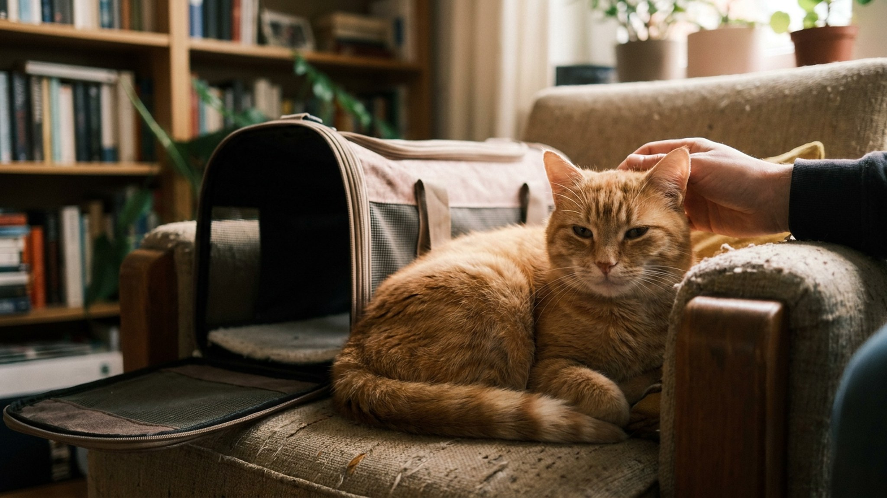

Большинство кошек переносят поход к ветеринару хуже, чем саму болезнь. Исследования показывают: после стандартного визита у кошки может сохраняться повышенный уровень стресса несколько дней, а некоторые начинают прятаться при виде переноски за недели до следующего приёма. Это не каприз и не избалованность — это память на угрозу. Хорошая новость: существуют доказательные протоколы, которые меняют эту ситуацию. Cat Friendly Practice и Fear Free — не маркетинг, а реальная методология.
🐾 Первая помощь — всегда под рукой
AnimaLife подскажет, что делать в тревожной ситуации с питомцем ещё до визита к врачу. Откройте в один тап.
Cat Friendly Practice (CFP) — международная программа сертификации ветеринарных клиник, разработанная ISFM (International Society of Feline Medicine) совместно с AAFP (American Association of Feline Practitioners). Сертификация оценивает физическую среду клиники, протоколы работы с кошками, обучение персонала и подходы к снижению стресса. Существует три уровня: Bronze, Silver, Gold.
Fear Free — более широкая международная инициатива, охватывающая всех животных. Основана американским ветеринаром Марти Беккером в 2016 году. Fear Free сертифицирует не только клиники, но и отдельных специалистов — ветеринаров, технических ассистентов, грумеров.
Ключевая идея обоих подходов одна: стресс у животного на приёме — это не норма, которую нужно принять, а проблема, которую можно решить. Более того, испуганная кошка показывает ненормальные показатели при осмотре: повышенное давление, тахикардию, мышечное напряжение — и врач получает искажённую клиническую картину.
Стандартный ветеринарный приём для кошки — это серия стрессовых событий подряд, каждое из которых само по себе уже является угрозой:
Каждое из этих событий записывается в память кошки как угрожающее. При следующем визите тревога начинается раньше и нарастает быстрее. Это называется сенсибилизация — обратный обучению процесс.
Переноска — главный триггер тревоги у большинства кошек. Исправляется это просто: переноска должна стоять в квартире постоянно, а не появляться только перед визитом к врачу.
На отработку уходит от нескольких дней до нескольких недель — в зависимости от того, насколько кошка уже напугана прошлыми ситуациями.
Кошка — облигатный хищник-одиночка с территориальным устройством жизни. Её нервная система эволюционно оточена на точный контроль своей среды. Любая ситуация, в которой кошка не может уйти, спрятаться или контролировать пространство, запускает острый стрессовый ответ.
При стрессе у кошки выбрасывается кортизол и адреналин. Сердечный ритм ускоряется, артериальное давление растёт, мышцы напрягаются. Это именно то, что врач видит на приёме — и ошибочно принимает за норму или за «кошка просто беспокойная».
Исследование, проведённое ветеринарными специалистами ISFM, показало: у кошек, которых везли в клинику стандартным способом (переноска появилась за 10 минут до поездки, машина, ожидание в общей зоне с собаками), уровень кортизола в крови был в 3-4 раза выше нормы. У кошек, подготовленных по протоколу снижения стресса, — не отличался от домашнего фона.
Практический вывод: кошке в состоянии острого стресса невозможно качественно помочь на приёме. Страх искажает всё — анализы, давление, болевой порог, поведение при пальпации. Снижение стресса — это не «приятный бонус», это медицинская необходимость для точной диагностики.
Переноска в машине — отдельная зона внимания.
Как выбирать клинику с точки зрения минимизации стресса для кошки:
Если вы хотите найти клинику, которая реально работает по кошачьим стандартам, — вот что спрашивать при первом звонке:
Клиника, где ответят «да» хотя бы на два из четырёх вопросов — уже лучший выбор, чем среднестатистическая. Клиника, где ответят «зачем это нужно?» — сигнал искать другую.
Дополнительный признак Cat Friendly подхода без формальной сертификации: врач не торопится, разговаривает тихо, не совершает резких движений, не держит кошку силой, если та уходит. Эти простые признаки говорят об обученности персонала лучше любых табличек на стене.
Грамотный врач, работающий по принципам Cat Friendly или Fear Free, это уже делает. Если нет — вы можете попросить:
Самый эффективный способ изменить отношение кошки к клинике — визиты без медицинских манипуляций. Вы приезжаете, заходите в кабинет, врач угощает кошку лакомством — и всё. Никаких уколов, никакого осмотра. Это называется «визит доверия», и он переписывает ассоциацию клиники с угрозы на нейтральный или даже позитивный опыт.
2-3 таких визита, особенно для котят и молодых кошек, могут сделать все последующие медицинские приёмы значительно менее стрессовыми. Договоритесь с клиникой заранее — большинство ветеринаров, понимающих поведенческие подходы, согласятся на короткий «привет, лакомство, до свидания».
🐾 Экономьте на лишних визитах к врачу
Сначала спросите AI-ветеринара в AnimaLife — часто этого достаточно, чтобы понять, нужен ли визит к врачу.
Хозяева часто думают: «вернулись домой, кошка выпрыгнула из переноски — значит, всё нормально». Но стресс от визита может проявляться несколько часов и дней после.
Если приём через неделю или меньше, а переноска стоит в кладовке — вот минимальный план:
Даже неделя подготовки лучше нулевой. Кошка не забудет предыдущие стрессовые визиты мгновенно, но первый шаг к изменению ассоциации можно сделать за короткое время.
Стресс при визите к ветеринару — решаемая проблема. Ключи: переноска как постоянная мебель с позитивными ассоциациями, феромоны в дороге, выбор клиники с кошачьими часами или Cat Friendly подходом, осмотр без вытряхивания и жёсткой фиксации. При сильной тревоге — gabapentin pre-visit по назначению врача. Тренировочные визиты доверия — лучшая долгосрочная инвестиция для кошки, которой ещё предстоят годы регулярных осмотров. Начните с переноски — и первый шаг уже сделан.